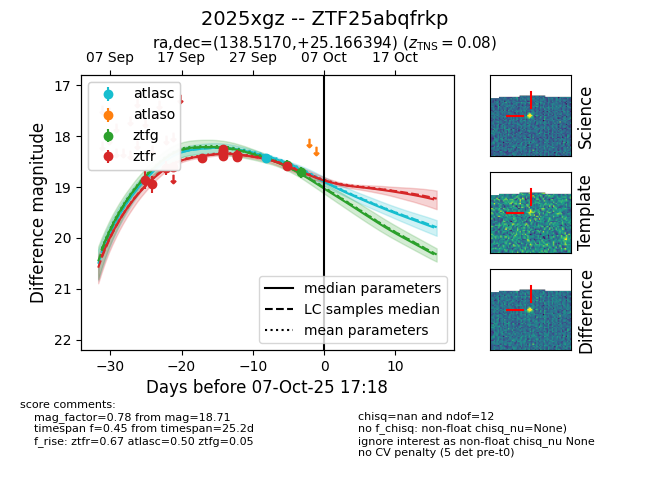

FINK: ZTF25abqfrkp
Lasair: ZTF25abqfrkp
ALeRCE: ZTF25abqfrkp
TNS: 2025xgz
YSE: 2025xgz
ZTF25abqfrkp (ztf,fink)
2025xgz (tns,yse)
equatorial (ra, dec) = (138.5170,+25.16639)
galactic (l, b) = (202.3122,+41.56494)

last ztfr=18.44
5 ztfr detections